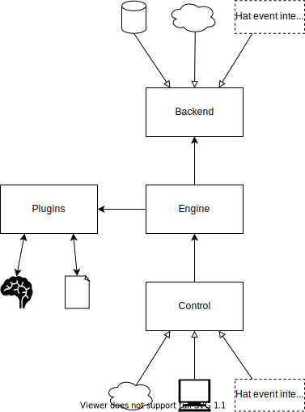

Server
AIMM server is a server application that listens on one or several interfaces (web services, multiprocess communication, etc.) and allows the clients that connect to them to perform various operations with its configured plugins.
Usage
After successful installation, the server can be run by calling
aimm-server in the command line. The command has the following interface:
usage: aimm-server [-h] [--conf path] Run AIMM server options: -h, --help show this help message and exit --conf path configuration defined by aimm://server/main.yaml# (default $XDG_CONFIG_HOME/aimm/server.yaml)
Configuration
To use the server, it needs to be configured. The configuration is a YAML file that contains options specific to different components of which the system consists. It also contains options for logging and Hat configuration. It needs to validate against the following schema:
---
$schema: 'http://json-schema.org/schema#'
id: 'aimm://server/main.yaml#'
type: object
required:
- name
- engine
- backend
- control
- plugins
- log
properties:
name:
type: string
engine:
'$ref': 'aimm://server/engine.yaml#'
backend:
'$ref': 'aimm://server/backend/main.yaml#'
control:
'$ref': 'aimm://server/control/main.yaml#'
plugins:
'$ref': 'aimm://plugins.yaml#'
hat:
'$ref': 'aimm://server/hat.yaml#'
log:
type: object
...
Logging configuration is mandatory and its values are passed directly to the
logging.basicConfig() function. Remaining properties of the root part
of the configuration directly correlate to the main components of the server’s
architecture, are more complex and will be explained separately.
Hat
AIMM server configuration contains options that allow it to work as a part of
Hat infrastructure. The optional hat property of the configuration
contains the options that allow this integration.
Connection to monitor is the minimal requirement in order to integrate to the
Hat network and the configuration parameters are as specified by the monitor
documentation. Additionally, if event_server_group field is set, AIMM
server will also attempt to connect to event server with in the given group.
If these properties are configured but the server cannot connect to Hat
components, it will halt and wait until it manages to connect.
Since AIMM server supports dynamic imports of different backend and control
implementations that may use the event server connection to receive and
register events, the modules containing these components need to implement a
get_subscriptions function that returns a list of event server
subscriptions. It should have the following type:
- aimm.server.common.CreateSubscription
Type of the
create_subscriptionfunction that the dynamically imported controls and backends may implement. Receives component configuration as the only argument and returns a subscription object.alias of
Callable[[Dict],Subscription]
A combined list of all these subscriptions is then used as the global
subscription of the entire server. If the get_subscriptions function is
provided, the component implementation will receive an instance of a
hat.event.eventer.Client, as specified here.
Architecture
After initialization and, optionally, Hat integration, the architecture of AIMM server may be represented with the following diagram:
The main components are:
engine - implements function calls that connect control interfaces with plugins, keeps the state of the application and uses backend to store it when neccessary
backend - handles state data persistence
plugins - contain model and data access implementations
control - provides external interfaces for clients, calls engine functions and notifies clients of state changes or call results
Common data structures
The server has some common data structures used in different components, required as arguments at some methods or returned as their results. They are documented in this section.
- class aimm.server.common.Model(instance: Any, model_type: str, instance_id: int)
Server’s representation of objects returned by
plugins.exec_instantiate(). Contains all metadata necessary to identify and perform other actions with it.- instance: Any
instance
- model_type: str
model type, used to identify which plugin to use
- instance_id: int
instance id
- class aimm.server.common.DataAccess(name: str, args: Iterable, kwargs: Dict[str, Any])
Representation of a
plugins.exec_data_access()call. May be passed as an argument in some methods, indicating that data needs to be retrieved prior to calling the main action. See more details on the exact method docstrings.- name: str
name of the data access type, used to identify which plugin to use
- args: Iterable
positional arguments to be passed to the plugin call
- kwargs: Dict[str, Any]
keyword arguments to be passed to the plugin call